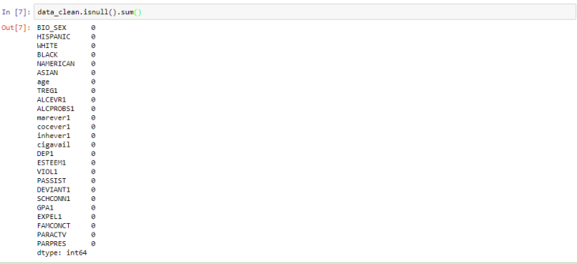
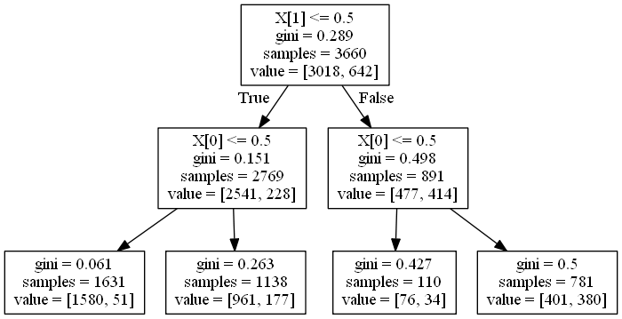

Definisi dan Implementasi Decision Trees¶
Decision tree (pohon keputusan) adalah model prediksi menggunakan struktur pohon atau struktur berhirarki. Decision tree juga berguna untuk mengeksplorasi data, menemukan hubungan tersembunyi antara sejumlah calon variabel input dengan sebuah variabel target.
Manfaat utama dari penggunaan decision tree adalah kemampuannya untuk mem-break down proses pengambilan keputusan yang kompleks menjadi lebih simple, sehingga pengambil keputusan akan lebih menginterpretasikan solusi dari permasalahan.
Kelebihan decision trees
- Mampu mengeliminasi perhitungan atau data-data yang kiranya tidak diperlukan.
- Untuk mengeksplorasi data
- Menemukan hubungan tersembunyi antara sejumlah calon variabel input dengan sebuah variabel target.
Kekurangan decision trees
- Bisa terjadi overlap, terutama ketika kelas dan kriteria yang digunakan terlalu banyak
- Dalam hal akumulasi, decision tree juga seringkali mengalami kendala eror terutama dalam jumlah besar.
- Kesulitan dalam mendesain decision tree yang optimal.
Terlepas dari kekurangan dan kelebihan dari decision tree, metode ini banyak digunakan lebih lanjut dalam berbagai pengolahan data. Mulai dari data mining dan juga machine learning. Dalam dunia kerja, decision tree sendiri sangat berguna untuk penilaian credit scoring .
Pertama-tama pastikan lo dah install python 3 dan beberapa python packages seperti :
- Pandas
- Numpy
- Matplotlib
- Scikit learn
- Jupyter Notebook —-> saya pake ini untuk IDE nya
Berikut Implementasi dari Decision Trees :¶
Langkah 1. Import Library¶
%matplotlib inline
from pandas import Series, DataFrame
import pandas as pd
import numpy as np
import os
import matplotlib.pylab as plt
from sklearn.model_selection import train_test_split
from sklearn.tree import DecisionTreeClassifier
from sklearn.metrics import classification_report
from sklearn import tree
import sklearn.metrics
from sklearn import tree
from io import StringIO
from IPython.display import Image
import pydotplusLangkah 2. Load Data Set¶
os.chdir("E:\latihan") #lokasi folder dimana terdapat file yang akan di load
# Load dataset
data = pd.read_csv("tree_addhealth.csv"karena file yang akan kita olah merupakan file csv maka perintah nya
data = pd.read_csv('nama file')apabila nantinya file yang akan kita olah adalah excel file maka perintahnya
data = pd.read_excel('nama file')Pastikan file jupyter notebooknya berada dalam folder yang sama dengan data yang akan diolah.
Langkah 3. Explore Data Set¶
Gunakan perintah
data.head(10)untuk menampilkan 10 baris pertama pada tabel
# Explore data
print(data.shape)
data.head(10)print(data.shape)akan menampilkan jumlah baris dan kolam, pada data yang akan kita olah ini terdapat 6504 baris dan 25 kolam.
Gunakan perintah
data.describe()untuk melihat nilai mean, standard deviasi, dll.

Langkah 4. Cleaning Data Set¶
Chek missing data
Pastikan data yang akan kita olah tidak terdapat data yang hilang sehingga tidak menimbulkan eror ketika pemprosesan decision tree berlangsung. Gunakan perintah
data.isnull().sum()untuk mengetahui jumlah NaN pada setiap kolom

ternyata banyak juga yang null, karena kita ingin simple aja tiap baris yang ada data kosong nya akan kita buang. pertama-tama kita buat variabel baru dengan nama
data_clean = data.dropna()dimana dengan perintah ini kita akan ngebuang semua baris yang terdapat data kosong

kalau kita bandingkan dengan sebelum di cleaning , sebelumnya terdapat 6504 baris dan sekarang menjadi 4575 baris.
Chek kembali untuk missing data
Gunakan perintah
data_clean.isnull().sum()untuk mengetahui jumlah NaN pada setiap kolom, dan liat apa yang terjadi ???

Setelah semuanya aman, dah bisa ke langkah berikutnya.
Langkah 5. Modelling and Prediction¶
Menetukan explanatory variables dan target variable
Decision trees hanya bisa mengolah data numeric, apabila data nya berupa string maka harus diconvert terlebih dahulu, sekarang kita cek mana saja yang merupakan data numeric. gunakan perintah seperti dibawah ini :
num_of_numerical_cols = data_clean._get_numeric_data().columns.shape[0]
print(num_of_numerical_cols, 'numerical columns')
name_of_numerical_cols = data_clean._get_numeric_data().columns
print(name_of_numerical_cols)ternyata semua nya data numeric, sekarang kita tentukan mana yang jadi explanatory variable dan target variable. Target variable nya kita ambil ‘TREG1’ merupakan categorical data 0 dan 1 dimana 0 menandakan non regular smoker dan 1 adalah regular smoker. Untuk explanatory variable kita boleh ambil beberapa variable tapi untuk kasus ini kita hanya ambil 2 saja supaya lebih gampang dalam memahami decision tree. Explanatory variable nya kita ambil ‘marever1’ (pernah atau tidak memakai mariyuana) dan ‘ALCEVR1’ (pernah atau tidak meminum alkhohol) keduanya merupakan categorical data, 0 menandakan tidak dan 1 menandakan prenah. Disini kita mau lihat pengaruh dari explanatory variable terhadap target variable. Biar ada bayangan ayo coba kita lihat datanya. langsung aja diketik :
data_clean[['TREG1', 'marever1', 'ALCEVR1']].sample(10)perintah ini akan menampilkan sample random sebanyak 10 buah
Split data menjadi training data dan test data
Disini data akan di bagi menjadi 2 bagian, yaitu training data dan test data dengan perbandingan 80% training data dan 20% test data. Dari training data inilah yang nantinya akan kita jadikan acuan sebagai model classifier nya.
#Split into training and testing sets
predictors = data_clean[['ALCEVR1','marever1']] # explanatory variable,
targets = data_clean.TREG1 # respon variable
X_train, X_test, y_train, y_test = train_test_split(predictors, targets, test_size=.2, random_state = 0) # 0.2 = 80% train data; 20% test dataSekarang mari kita lihat dimensi dari data nya
print('X_train = ',X_train.shape )
print('X_test = ',X_test.shape )
print('y_train = ',y_train.shape )
print('y_test = ',y_test.shape )X_train = (3660, 2)
X_test = (915, 2)
y_train = (3660,)
y_test = (915,)Bulid model dan train the model
classifier=DecisionTreeClassifier()
classifier.fit(X_train,y_train)
predictions=classifier.predict(X_test)
confusion_array = sklearn.metrics.confusion_matrix(y_test,predictions)
print(confusion_array) [[750 0]
[165 0]]print('TN = ', confusion_array[0,0] ) # True Negative
print('FN = ', confusion_array[1,0] ) # False Negative
print('TP = ', confusion_array[1,1] ) # True Positive
print('FP = ', confusion_array[0,1] ) # False PositiveTN = 750
FN = 165
TP = 0
FP = 0Baris pertama dari confussion array di atas merupakan non regular smoker prediction : 750 observation dengan benar di klasifikasi sebagai non regular smoker (called true negatives) and 0 observation dengan salah di klasifikasi sebagai non regular smoker ( false positive). Baris kedua merupakan regular smoker prediction: 165 observation dengan salah diklasifikasi sebagai regular smoker (false negative) dan 0 observation dengan benar diklasifikasi sebagai regular smooker (true positive)
Accuracy Score
Untuk sementara saya cuma hitung accuracy saja
In :
# Accuracy Score
sklearn.metrics.accuracy_score(y_test, predictions)Out:
0.819672131147541Visualize
Dilihat dari decision tree plot dibawah X[0] menandakan ‘marever1’ dan X[1] menandakan ‘ALCEVR1’ , untuk value[0] menandakan non regular smoker and value[1] menandakan regular smoker. Sebagai contoh dari 3660 observation, 2769 observation menandakan tidak pernah mengkonsumsi alkohol sekalipun dalam hidupnya dan dari jumlah yang 2769, sebanyak 1631 tidak pernah mengkonsumsi mariyuana dan dari jumlah itu 1580 merupakan non regular smoker dan 51 orang merupakan regular smoker.
import os
os.environ["PATH"] += os.pathsep + 'C:/Program Files (x86)/Graphviz2.38/bin/'
out = StringIO()
tree.export_graphviz(classifier, out_file=out)
import pydotplus
graph=pydotplus.graph_from_dot_data(out.getvalue())
Image(graph.create_png())
DAFTAR PUSTAKA :
https://medium.com/iykra/mengenal-decision-tree-dan-manfaatnya-b98cf3cf6a8d